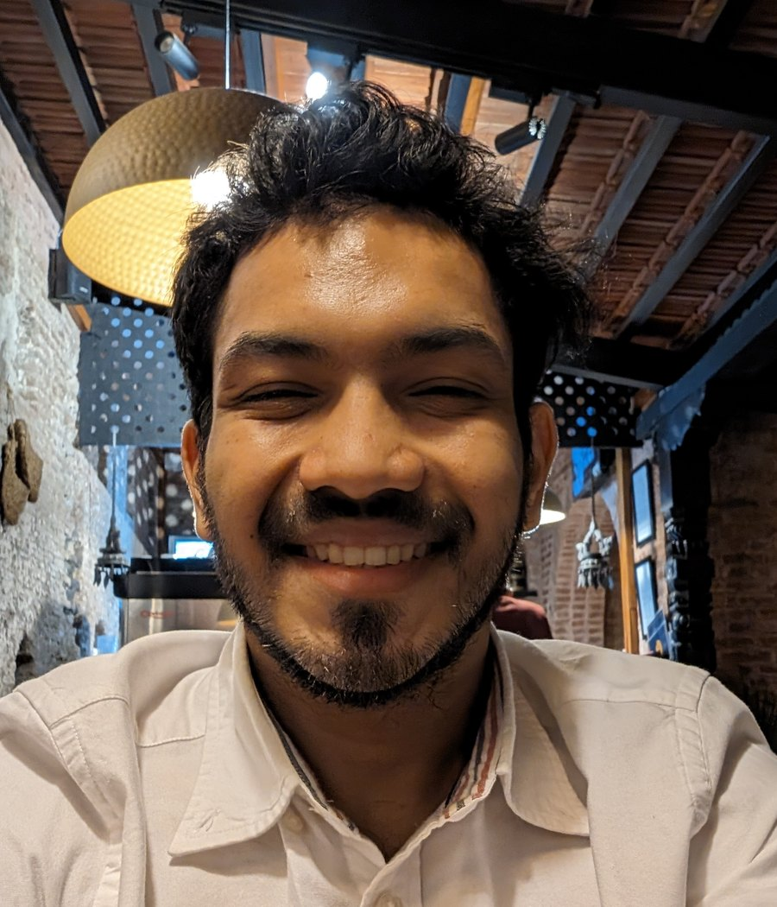

MCh, Urology / Genito-Urinary Surgery & Renal Transplant
2023 — ongoing
Kasturba Medical College, Manipal Academy of Higher Education

I'm a Urology Senior Resident at Kasturba Medical College, Manipal, coming in with a general surgery background. Most of my time right now is split between clinical work, OT, and research.
My current research looks at suction versus non-suction access sheaths in RIRS — essentially what actually happens to visibility and pressure inside the kidney during the procedure. Outside of that, I'm interested in where AI and digital health can genuinely help in urology, not just as a buzzword.
Education
Kasturba Medical College, Manipal Academy of Higher Education
Netaji Subhash Chandra Bose Subharti Medical College, Meerut
Himalayan Institute of Medical Sciences, Dehradun
Experience
Kasturba Medical College, Manipal
Advanced urological surgeries, inpatient management, and outpatient consultations.
Government Doon Medical College, Dehradun
High outpatient caseload, independent surgeries, supervision of undergraduate students.
Subharti Hospital, Meerut
Broad operative experience across general surgery, emergency, urology, neurosurgery, pediatric and plastic surgery. Coordinated emergency surgical care through the COVID-19 pandemic.
Certifications & Memberships